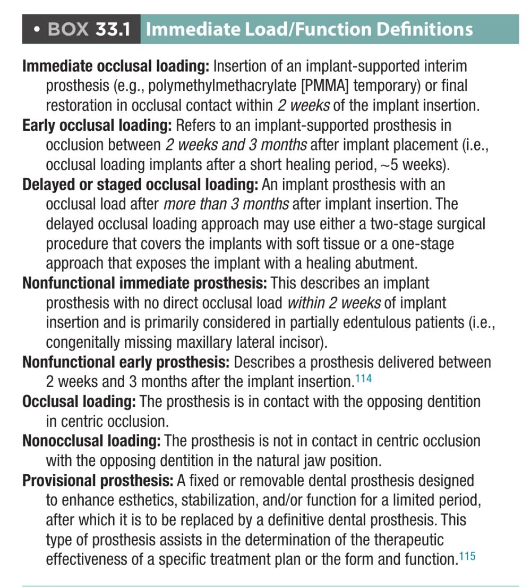
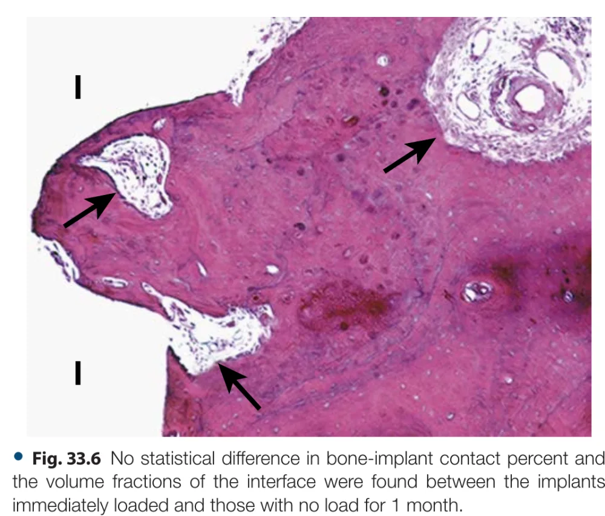

نسخه استخراجشده؛ ترجمه یا تأیید علمی انجام نشده است. وضعیت: captured
پروتکل کلاسیک دومرحلهای سالها پیششرط استئواینتگریشن دانسته میشد: ایمپلنت را کمی زیر استخوان کرستال بگذار، بافت نرم را رویش ببند، و ۳ تا ۶ ماه هیچ باری به آن وارد نکن.
این پروتکل مستند و موفق بود. اما حرفه به دنبال زمان کوتاهتر و جراحی کمتر بود — و بارگذاری فوری از همینجا زاده شد.
و بلافاصله یک مشکل زبانی ساخت. اصطلاحشناسی این تکنیکها مبهم و ناهمگون است. دو مقاله که هر دو میگویند «immediate load» ممکن است دو کار کاملاً متفاوت کرده باشند. برای همین یک واژهنامهی استاندارد پیشنهاد شده است.
محور اول — زمان:
محور دوم — تماس اکلوزالی:
و از تقاطع این دو محور، دو واژهی مهم بیرون میآید:
و واژهی هشتم که ربطی به زمان ندارد:
Provisional prosthesis (پروتز موقت): پروتز ثابت یا متحرکی که برای مدت محدود زیبایی، پایداری و/یا عملکرد را بهبود میدهد و سپس با پروتز نهایی جایگزین میشود. و نکتهای که اغلب نادیده گرفته میشود: این پروتز به تعیین اثربخشی درمانی طرح درمان یا فرم و عملکرد کمک میکند — یعنی موقت فقط یک پرکنندهی جای خالی نیست، یک آزمون است.
چرا این تفکیک اهمیت بالینی دارد: «۲ هفته» و «۳ ماه» عدد دلبخواه نیستند. در درس ۳ خواهی دید که رابط استخوان-ایمپلنت دقیقاً در هفتهی ۳ تا ۶ ضعیفترین حالت خود را دارد. پس پروتزی که در روز اول در اکلوژن گذاشته میشود و پروتزی که در هفتهی پنجم گذاشته میشود، با دو استخوان کاملاً متفاوت روبهرو هستند — و همین است که این واژهها را از بازی زبانی به تصمیم بالینی تبدیل میکند.

سود یکم — ناراحتی کمتر بیمار. جراحی مرحلهی دوم (uncover) لازم نیست، پس جلسات کمتر میشود. اما نکتهی مهمتر جای دیگری است: در بسیاری از حالتهای بارگذاری تأخیری، بیمار باید در تمام دورهی ترمیم یک پروتز متحرک بپوشد. این نهتنها ناراحتکننده است، بلکه احتمال اورلود بافت و/یا ایمپلنت را بیشتر میکند. با بارگذاری فوری، پروتز متحرک پوشیده نمیشود.
سود دوم — درمان سریعتر. بدون جراحی مرحلهی دوم و بدون انتظار برای ترمیم بافت. و افزون بر این، در بیشتر موارد، اگمنتاسیون پیچیدهی استخوان لازم نمیشود — چون ریج هنوز تحلیل پس از کشیدن را طی نکرده است.
سود سوم — درِیپ بافت نرم مطلوبتر. بافت اطراف فرصت مییابد به شکل همان پروتز بالغ شود و ترمیم یابد. این در نواحی زیبایی از همه مهمتر است، جایی که جمعشدن بافت نرم پس از جراحی مرحلهی دوم میتواند مارجینها و کانتور پاپیلا را خراب کند.
سود چهارم — رضایت فوری و پذیرش بیمار. در کشیدنهای قوس کامل، گذاشتن فوری پروتز نهتنها زیبایی را بهبود میدهد بلکه عملکرد جویدن و تودهی عضلانی را حفظ میکند. در یک بررسی، بیماران بهطور غالب از بهبود چشمگیر کیفیت زندگی و افزایش اعتمادبهنفس سخن گفتند.
حالا هزینهها:
هزینهی یکم — سطح مهارت بالاتر. بهویژه وقتی دندان کشیده و ایمپلنت همزمان گذاشته میشود. این موارد به برنامهریزی گسترده نیاز دارند، معمولاً با طرح درمان تعاملی CBCT. و گایدهای کاهش استخوان و قرارگیری، پیچیدگی جراحی و پروتز را بالا میبرند.
هزینهی دوم — جلسهی اول طولانیتر. این در سطح یک ریسک پزشکی مطرح است، نه صرفاً یک ناراحتی: طولانی شدن جلسه ممکن است از تحمل بیمار فراتر رود و در برخی بیماران احتمال عوارض پزشکی را افزایش دهد.
هزینهی سوم — احتمال موربیدیتی بیشتر ایمپلنت. و اینجا یک تصحیح جالب لازم است.
شایعه در برابر داده: ریسک تحلیل استخوان یا شکست ایمپلنت «اغلب بهعنوان یک عیب مطرح میشود» — اما «بهطور کلی این با مطالعات بالینی و پژوهش پشتیبانی نمیشود». یک مرور سیستماتیک و متاآنالیز که بارگذاری فوری را با بارگذاری متعارف مقایسه کرد، هیچ تفاوتی در تحلیل استخوان مارجینال بین دو تکنیک نیافت.
پس عیب واقعی چیست؟ دقیق بگوییم: اگر شکست رخ دهد، پیامدش سنگینتر است — از دست رفتن اعتماد بیمار به پزشک، هزینه و زمان درمان بیشتر، و دورهی درمانی طولانیتر. یعنی مسئله احتمال شکست نیست، هزینهی شکست است.
و یک سود پنهان که اصلاً انتظارش را نداری:
تماس استخوان-ایمپلنت (BIC) بیشتر. مطالعات هیستولوژیک BIC بهتری را در ایمپلنتهای بارگذاریشدهی فوری نسبت به پروتکل متعارف نشان دادهاند. در یک مطالعهی حیوانی، ایمپلنتهای بارگذاریشدهی زودهنگام استخوان کورتیکال لاملار ضخیمتری نسبت به ایمپلنتهای بدون بار داشتند. و عدد یک گزارش هیستولوژیک دیگر گویاتر است: BIC برابر ۶۴٫۲٪ برای یک ایمپلنت تک بارگذاریشدهی فوری، در برابر ۳۸٫۹٪ برای ایمپلنت تک سابمرجشده.
و یک استثنای مهم که ترازنامه را در یک موقعیت خاص وارونه میکند:
دربارهی ایمپلنت تک، بارگذاری فوری در ادبیات بهخوبی مستند است و کارآزماییهای متعددی بقا و موفقیت رضایتبخش نشان دادهاند. اما تفاوت عمده در پروتکل بارگذاری است:
در یک مطالعهی متاآنالیز، نرخ شکست ایمپلنتهای تکِ بارگذاریشدهی فوری پنج برابر بیشتر از ترمیم تأخیری بود.
و افزون بر این، هیچیک از مطالعات بررسیشده مزیت برتری در بافت نرم و زیبایی نسبت به پروتکلهای جراحی تأخیری نشان نداد.
و راهحل بیمار پارسیل همینجاست: منطقش ساده است — بیشتر این بیماران دندانهای باقیماندهی کافی در تماس دارند که عملکرد را تأمین کنند. پس پروتز موقت عمدتاً برای زیبایی است و پروتز ایمپلنت کاملاً عاری از هرگونه تماس اکلوزالی. این مفهوم N-FIT نام دارد — دندانهای فوریِ غیرعملکردی.
نتیجهی درس: بارگذاری فوری «میانبُر پرخطر» نیست. اگر شرایطش فراهم باشد، حتی ممکن است رابط بهتری بسازد. تمام کار این یونیت این است که بگوید «شرایطش» دقیقاً چیست.
